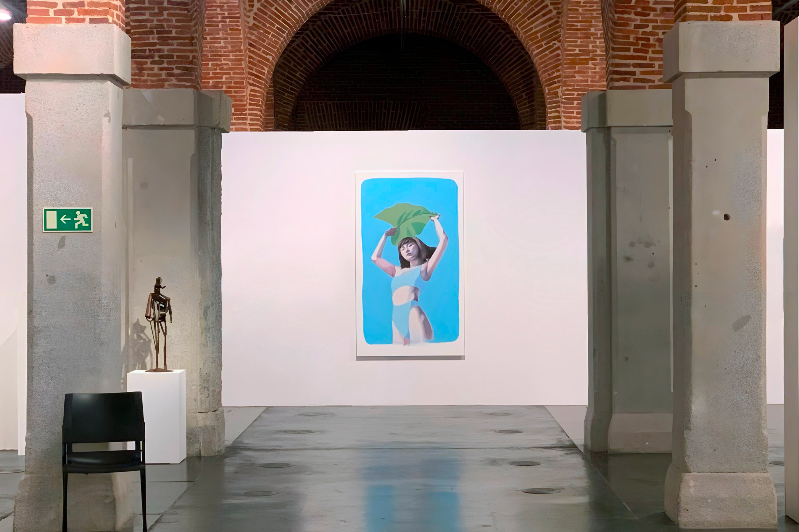
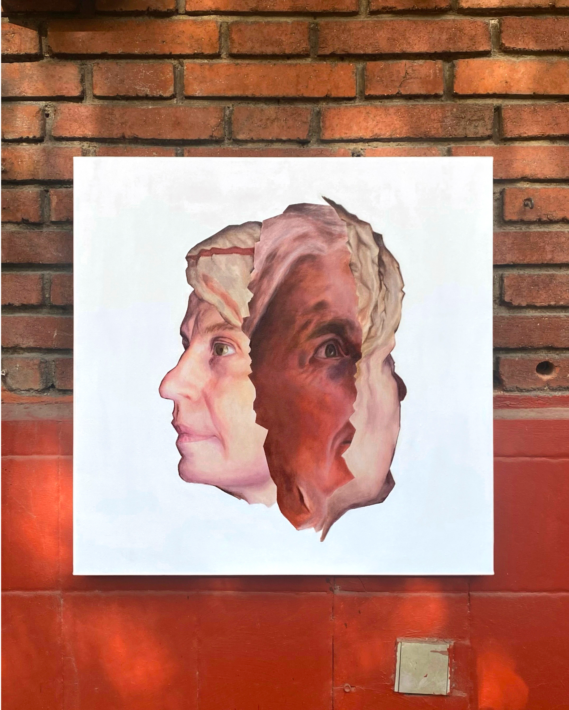
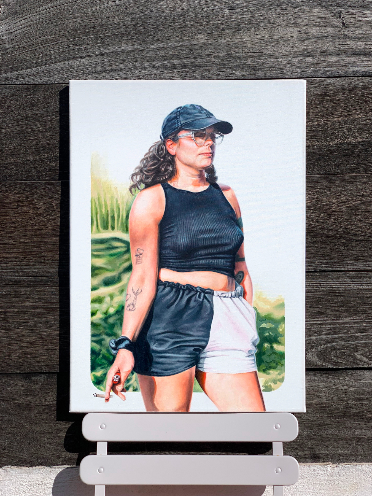
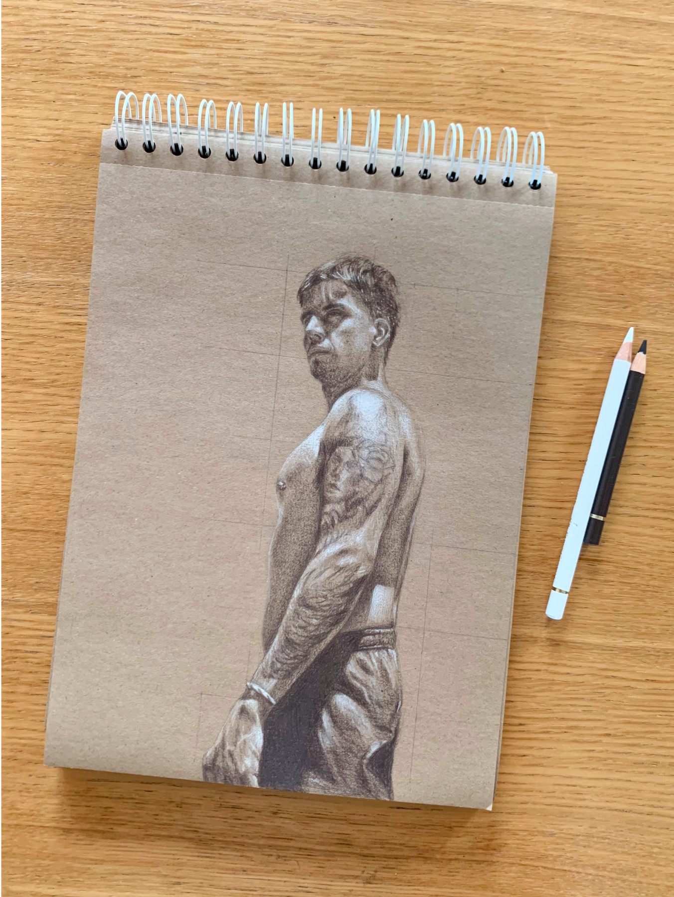
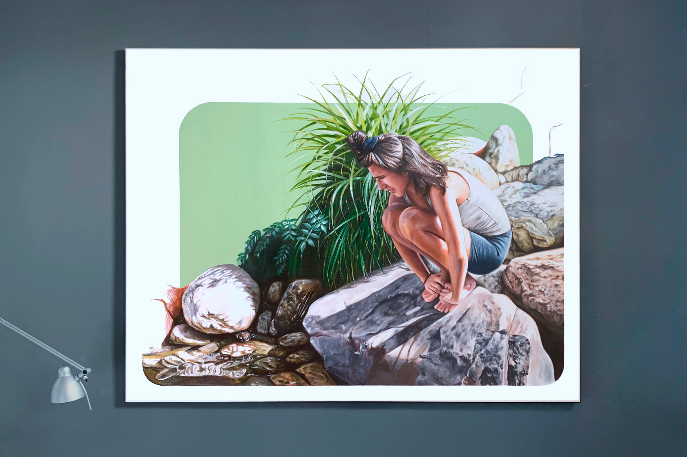
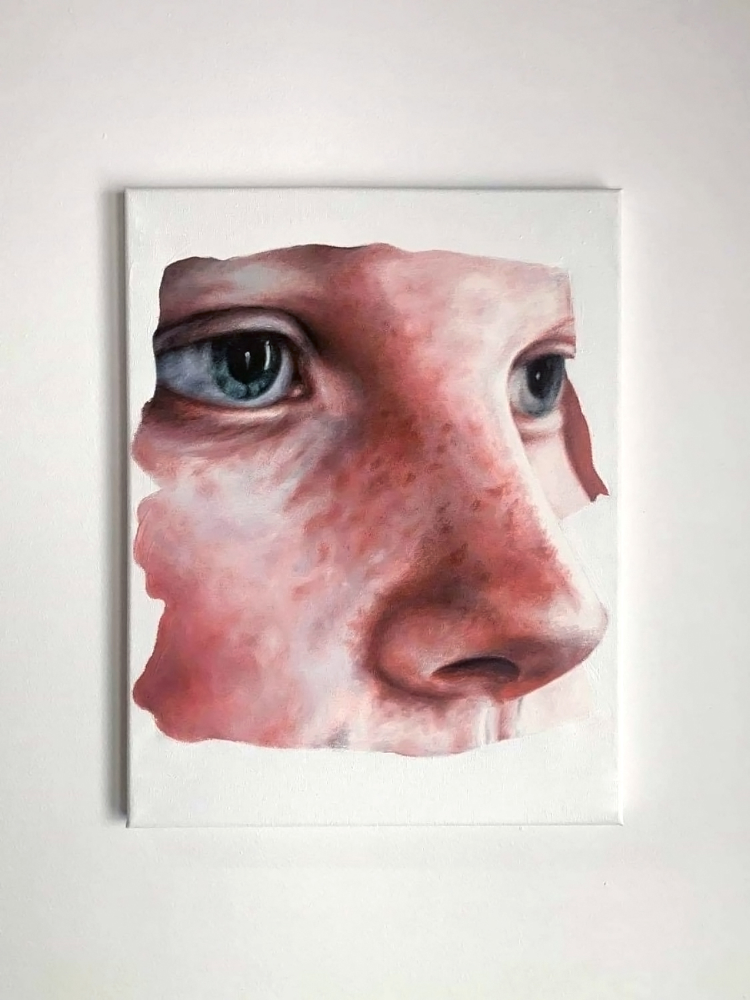
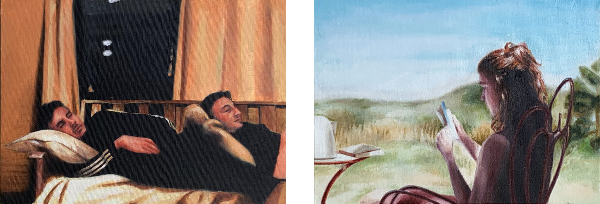
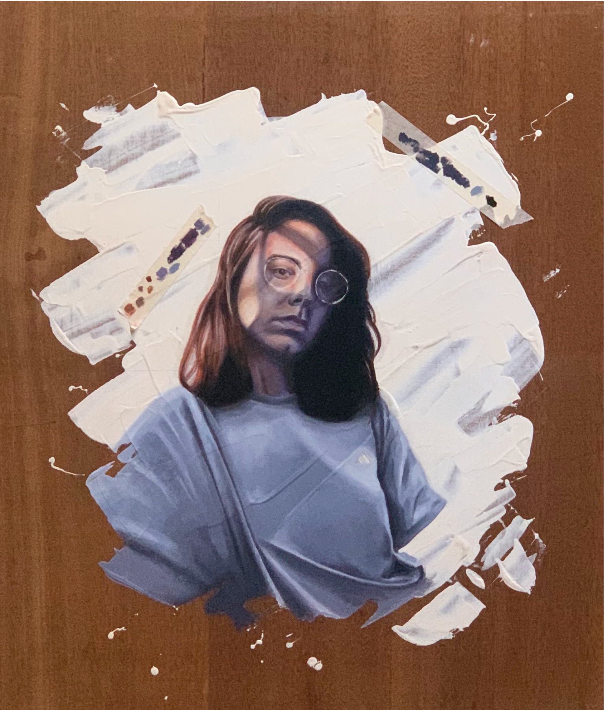
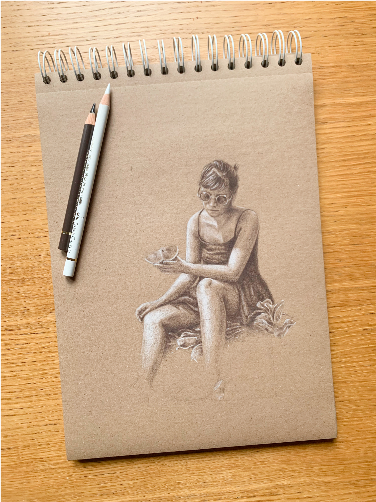
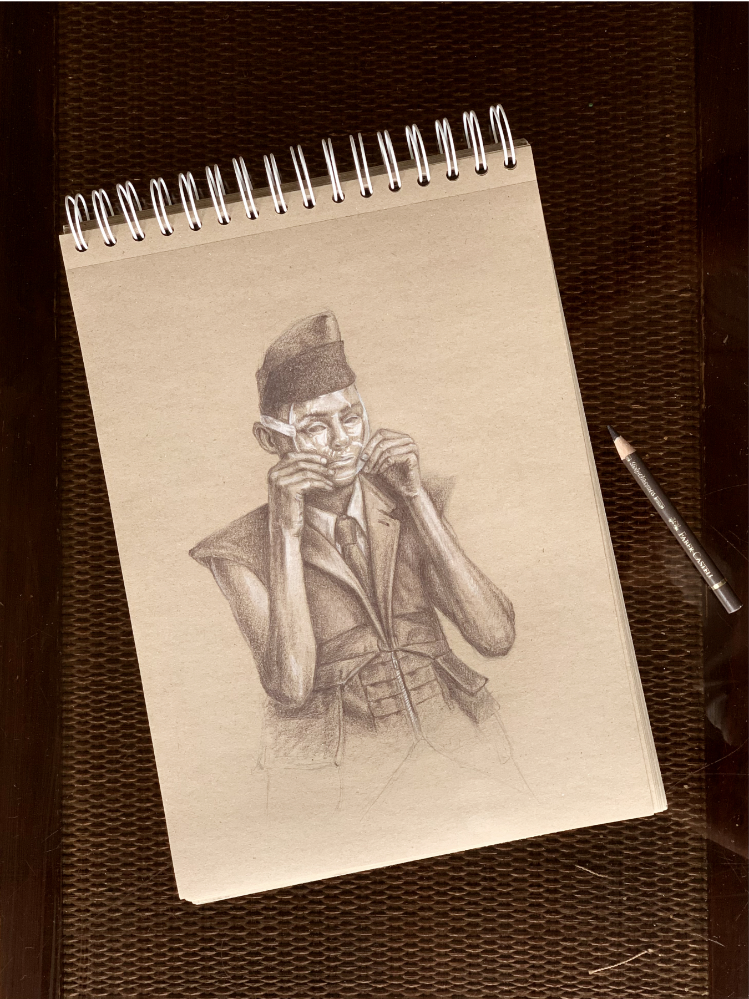

Piáo210 x 110 cm - Técnica mixta

TheTrigger60 x 60 cm - Óleo sobre lienzo

No hay drama en la satisfacción46 x 65 cm - Óleo sobre lienzo

Apuntes18 x 13 cm - Óleo sobre papel

Viaje de bodas II46 x 65 cm - Óleo sobre lienzo

Dibujo 0129 x 21 cm - Policromos sobre papel madera

Tauro en piscis146 x 114 cm - Óleo sobre lienzo

Tauro en piscis146 x 114 cm - Óleo sobre lienzo

Ephedra Sinica / CRUDO41 x 33 cm / 24 x 16 cm / 24 x 16 cm - Óleo sobre lienzo

Sin titulo30 x 40 cm - Óleo sobre lienzo

Sin titulo / Prinsepunk22 x 16 cm / 22 x 16 cm - Óleo sobre lienzo

Sin titulo60 x 50 cm - Óleo sobre lienzo

Dibujo 0229 x 21 cm - Policromos sobre papel madera

Dibujo 0329 x 21 cm - Policromos sobre papel madera